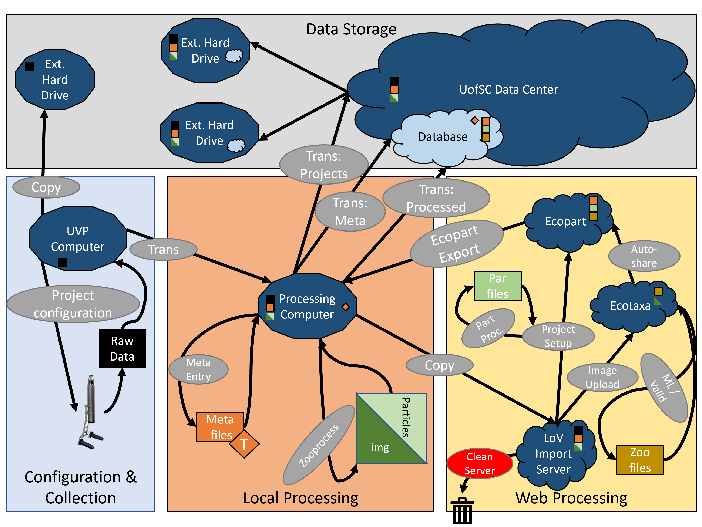

Introduction & Data Plan
Introduction
This booklet is a set of guides and resources for anyone in our lab working on UVP Data.
Anyone working with the UVP needs to thorougly read throught the UVP manual
In this guide there are several resources for processing UVP data. First, there are specifics as to how projects should be configured. Next, there is a dictionary for UVP files and terms. There is also resources for connecting to the processing computer, transferring data, and more. Validation of vignettes should follow the StoneLAB ID guide Analysis of UVP data is made easy with EcotaxaTools
Data Management:
UVP processing and data management can be broken down into four fundamental phases:

A walk through the Data management plan:
Our data were previously acquired and moved between a set of external harddrives with no clear system